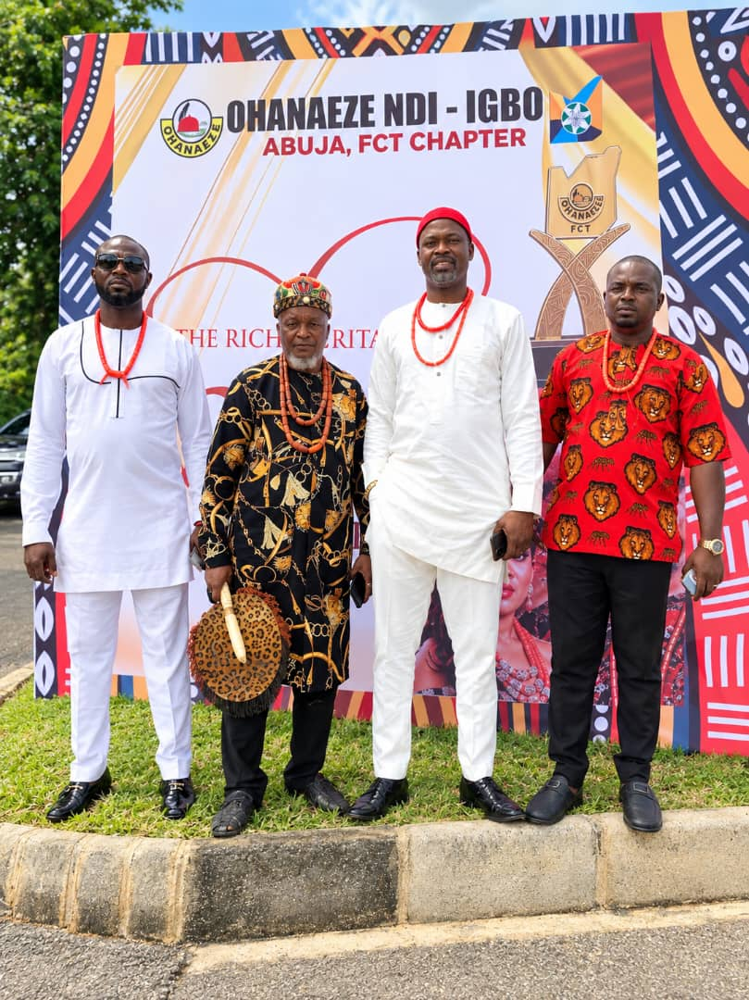

FEATURED STORY
INCLUSION & COMMUNITY DEVELOPMENT
Introducing the Non-Indigenes Unity Mandate
An inclusive vision centred on unity, shared opportunity, human socio-capital empowerment and sustainable development across AMAC/Bwari Federal Constituency.
The initiative reflects the campaign's commitment to strengthening community participation and recognising the contributions of the diverse communities that make up the constituency.
Read Full Story